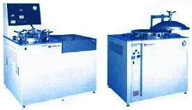
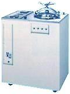

|
Autoclave or
Pressure Cooker Test (PCT)
Autoclave
Test,
or
Pressure Cooker Test (PCT),
or
Pressure Pot Test (PPOT),
is a reliability test performed to assess the ability of a product to
withstand severe
temperature
and
humidity
conditions.
It is used primarily to accelerate corrosion in the
metal parts of the product, including the metallization areas on the
surface of the die. It also subjects the samples to the high vapor
pressure generated inside the autoclave chamber. Figure 1 shows
examples of autoclave chambers.
|
 |
|
Fig.
1. Examples of Autoclave Chambers from Trio Tech |
Autoclave
testing consists of
soaking
the samples for
168 hours
at
121 deg C,
100% RH, and 2 atm. Intermediate
readpoints at 48H and 96H
may also be employed.
Surface-mount samples are
preconditioned
prior to autoclave testing. Preconditioning
simulates the board
mounting process of the customer. It normally consists of a
bake
to drive away the moisture inside the packages of the samples, a
soak to
drive a controlled amount of moisture into the package, and three cycles
of IR or vapor reflow.
The samples
are tested
after
preconditioning, failures from which are considered as preconditioning
failures and
not
autoclave failures. Preconditioning failures should be taken
seriously, since these imply that the samples are not robust enough to
even withstand the board mounting process.
|
 |
|
Fig.
2. Another Example of an Autoclave Chamber |
Because of
the extreme moisture condition during autoclave testing,
moisture-related electrical leakage failures may be encountered after
the test. Unless predefined to be so, such failures must not be
considered as valid PCT failures. Only
permanent
failures, such as those arising from corrosion, are considered valid PCT
failures.
Reliability
Tests:
Autoclave
Test or PCT; Temperature
Cycling; Thermal
Shock;
THB;
HAST;
HTOL;
LTOL;
HTS; Solder
Heat Resistance Test (SHRT);
Other
Reliability Tests
See Also:
Reliability
Engineering;
Reliability Modeling;
Qualification
Process; Failure
Analysis;
Package Failures; Die
Failures
HOME
Copyright
©
2001-Present
www.EESemi.com.
All Rights Reserved.
|